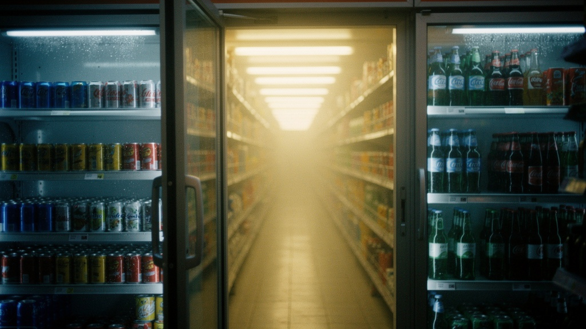

Chapter 04
언어를 이미지로 번역하다
텍스트 결과물 중 Claude와 Gemini의 언어를
이미지 AI 프롬프트로 변환해 시각화했다.
Claude
— "심야의 마음들이 상품처럼 진열된 복도"

이미지 프롬프트
A convenience store refrigerator door open, leading into an endless warm fluorescent corridor. Shelves stretching infinitely into soft yellow-white haze. Late night urban atmosphere, quiet and slightly surreal. Cinematic, painterly dreamy realism.
관찰: Claude의 "도시적 고독"이 1점 투시의 깊은 통로로 시각화됐다. 양측 진열대 사이로 노란빛이 뿜어져 나오는 구도 — 익숙한 공간이 무한히 연장되는 방식으로 경계를 표현한다. "여기인데 다른 곳."
Gemini
— "우주 한가운데의 조용한 간이역"

이미지 프롬프트
Beyond a convenience store refrigerator door, a soft milk-white glowing corridor stretches into infinity. No ceiling, no walls — only a luminous pastel horizon. The space feels like a quiet cosmic transit station, weightless and serene. Ethereal surreal illustration, soft sci-fi.
관찰: Gemini의 "오감 설계"가 텅 빈 파스텔 공간으로 번역됐다. 냉장고 안이 아무것도 없는 천상의 복도가 된다. Claude 버전이 "연장"이라면, Gemini 버전은 "전환" — 문을 열면 즉시 다른 차원이다.
Claude — 연장
Gemini — 전환
Claude 버전의 특성
- 어두운 배경 + 노란 빛의 대비
- 물리적 공간의 무한 연장
- 도시의 질감과 감성 유지
- 경계가 서서히 흐릿해지는 방식
Gemini 버전의 특성
- 파스텔 톤, 모든 것이 밝음
- 일상의 흔적 완전히 소거
- 우주적·초월적 스케일감
- 경계가 즉각 완전히 전환
텍스트 → 이미지 번역 과정에서 발견한 것
텍스트의 감정적 밀도가 이미지에서는 색온도와 공간 밀도로 치환된다. Claude가 언어로 쌓아올린 "도시 감성과 고독"은 어두운 배경 + 노란 빛의 대비로 살아남았고, Gemini가 묘사한 "무중력·시트러스 향·다정한 공기"는 텅 빈 흰 공간 + 파스텔 지평선으로 번역됐다. 언어와 이미지는 같은 감각을 공유하지 않지만, 감각의 온도는 전달된다.